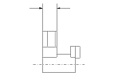

M/T Shift Fork Clearance Inspection
NOTE: The synchro sleeve and synchro hub should be replaced as a set.
Measure the clearance between each shift fork (A) and its matching synchro sleeve (B). If the clearance exceeds the service limit, go to
Step 2
.
Standard:
0.35−0.65 mm (0.014−0.026 in.)
Service Limit:
1.0 mm (0.039 in.)
Measure the thickness of the shift fork fingers.
If the thickness is not within the standard, replace the shift fork.
If the thickness is within the standard, replace the synchro sleeve.
Standard:
1st/2nd shift fork:
6.7−6.9 mm (0.26−0.27 in.)
3rd/4th, 5th/6th shift fork:
7.4−7.6 mm (0.29−0.30 in.)
Measure the clearance between the shift fork (A) and the shift piece (B). If the clearance exceeds the service limit, go to
Step 4
.
Standard:
0.2−0.5 mm (0.008−0.020 in.)
Service Limit:
0.6 mm (0.023 in.)
Measure the width of the shift piece.
If the width not within the standard, replace the shift piece.
If the width is within the standard, replace the shift fork.
Standard:
15.9−16.0 mm (0.626−0.630 in.)
